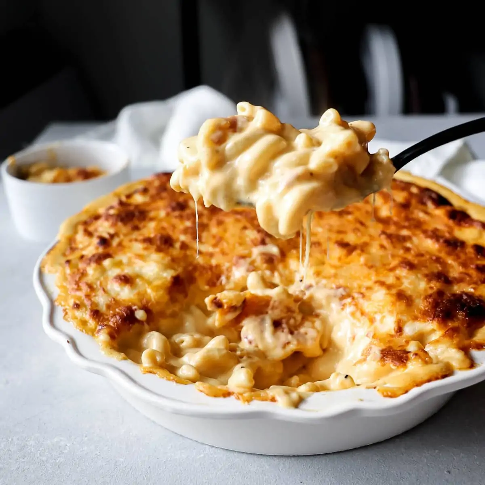

Gourmet Mac & Cheese

The Mac & Cheese that your husband dreams of
Heavy on smoky gouda and dripping with creaminess, this Gouda
Mac & Cheese is the perfect mac combo. Above all, the best part
about this mac and cheese recipe is there's no need for overly
expensive cheeses. Just pick three or four of the one's you
love and create the perfect one for you.
Ingredients
- 1 pound dry macaroni pasta
- 4 cups shredded cheese, plus 1 cup for baked topping if
desired (gouda, white cheddar, parmesan, and Velveeta is
my go-to combination; 1 cup of each)
- 1/2 cup (1 stick) unsalted butter
- 4 tbsp all-purpose flour
- 2 cup whole milk (or half and half)
- 1 cup heavy cream
- 1/2 cup sour cream
- 1 tsp kosher salt
- 1 tsp freshly cracked black pepper
- 1/2 tsp garlic powder
- 1/2 tsp paprika
Steps
- Boil macaroni. Boil pasta per package instructions, reserve
1 cup pasta water, then drain.
- Make cheese sauce. In the same or large pot, melt 1/2 cup
(1 stick) butter over medium heat. Whisk in 4 tbsp all-purpose
flour, and cook for 1 minute, whisking constantly. Pour in
2 cups milk and 1 cup heavy cream, then stir occasionally
on high heat until the mixture thickens.
- Combine macaroni & cheese. Fold in 4 cups shredded cheese,
1/2 cup sour cream, 1 tsp salt, 1 tsp pepper, 1/2 tsp
garlic powder, and 1/2 tsp paprika. Melt the cheeses into
a smooth sauce, whisking to break up lumps, about 3 minutes.
If the sauce is too thick, pour in some pasta water to
loosen the cheese sauce. Turn off the heat. Stir in the cooked macaroni.
- Optional - Bake. If you like your macaroni with a
cheesy baked crust, pour the cooked mac & cheese into a
baking dish. Top with 1 cup extra shredded cheese. Bake at
375º F for 10-15 minutes until golden brown and bubbly on
top. In the last 2 minutes, broil the top for a great crust,
but watch it carefully to avoid burning! Enjoy warm!